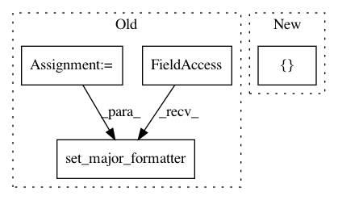

eaa7025a37930ddfac810721c14452548db87ebc,examples/lines_bars_and_markers/scatter_hist.py,,,#,15
Before Change
x = np.random.randn(1000)
y = np.random.randn(1000)
nullfmt = NullFormatter() // no labels
// definitions for the axes
left, width = 0.1, 0.65
bottom, height = 0.1, 0.65
bottom_h = left_h = left + width + 0.02
rect_scatter = [left, bottom, width, height]
rect_histx = [left, bottom_h, width, 0.2]
rect_histy = [left_h, bottom, 0.2, height]
// start with a rectangular Figure
plt.figure(figsize=(8, 8))
axScatter = plt.axes(rect_scatter)
axHistx = plt.axes(rect_histx)
axHisty = plt.axes(rect_histy)
// no labels
axHistx.xaxis.set_major_formatter(nullfmt)
axHisty.yaxis.set_major_formatter(nullfmt)
// the scatter plot:
axScatter.scatter(x, y)
After Change
// now determine nice limits by hand:
binwidth = 0.25
lim = np.ceil(np.abs([x, y]).max() / binwidth) * binwidth
ax_scatter.set_xlim((-lim, lim))
ax_scatter.set_ylim((-lim, lim))
In pattern: SUPERPATTERN
Frequency: 3
Non-data size: 4
Instances
Project Name: matplotlib/matplotlib
Commit Name: eaa7025a37930ddfac810721c14452548db87ebc
Time: 2019-04-26
Author: 2836374+timhoffm@users.noreply.github.com
File Name: examples/lines_bars_and_markers/scatter_hist.py
Class Name:
Method Name:
Project Name: matplotlib/matplotlib
Commit Name: 7ad4996b6106e601ed7136c11e17abbb149ef889
Time: 2019-04-27
Author: nelle.varoquaux@gmail.com
File Name: examples/lines_bars_and_markers/scatter_hist.py
Class Name:
Method Name:
Project Name: datascienceinc/Skater
Commit Name: 8ddaf457d16822c3434cc46ab2f4da33d26e555c
Time: 2017-03-23
Author: aikramer2@gmail.com
File Name: pyinterpret/core/global_interpretation/partial_dependence.py
Class Name: PartialDependence
Method Name: _3d_pdp_plot